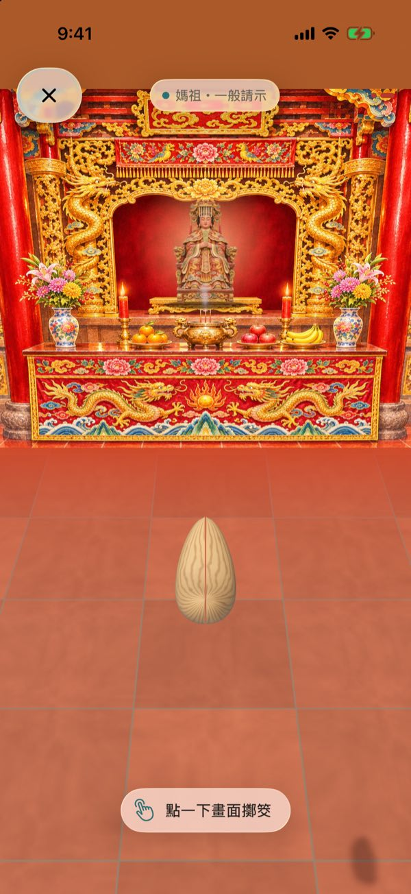
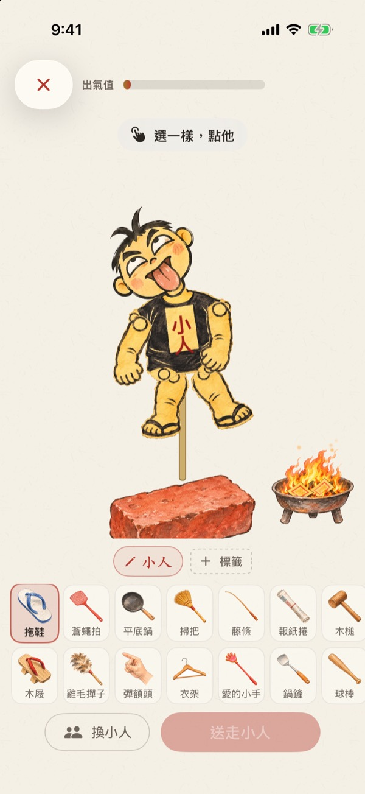

問筊
台灣廟宇文化的模擬與體驗
擲筊、參拜、抽籤、打小人，還有每天的農曆與節氣。不用註冊帳號，資料只存在手機上。




使用前先知道
- 你的資料
- App 不用帳號，沒有廣告，也沒有分析工具；紀錄與個人資料都只存在你的 iPhone 上，我們看不到。詳見隱私權政策。
- 需要什麼
- iPhone，iOS 26 或以上。介面是繁體中文。不用註冊帳號，不連網路也能用。
- 遇到問題
- 操作方式與常見問題都在支援頁，也可以寫信到 service@sunrise-growth.com。